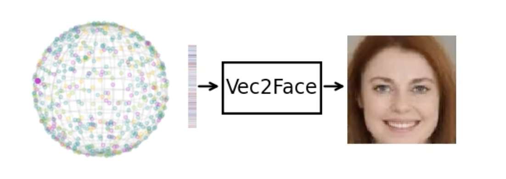
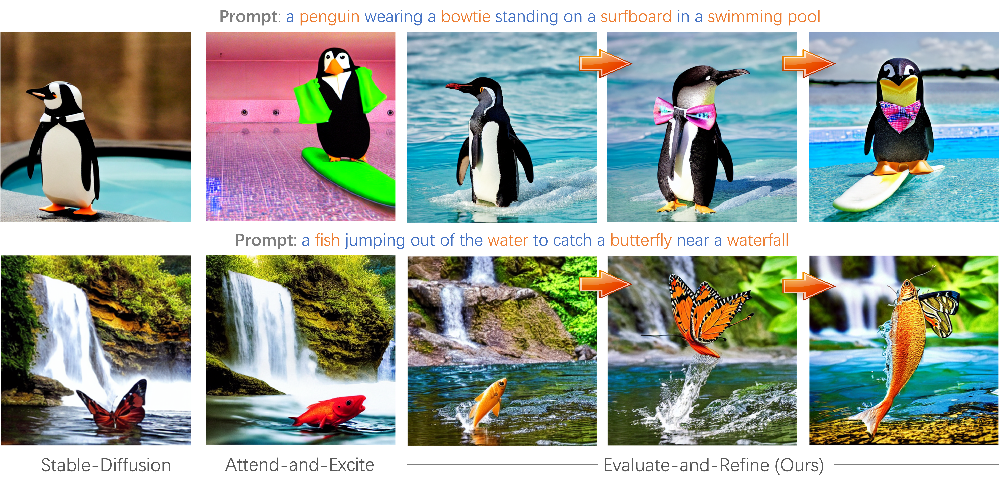
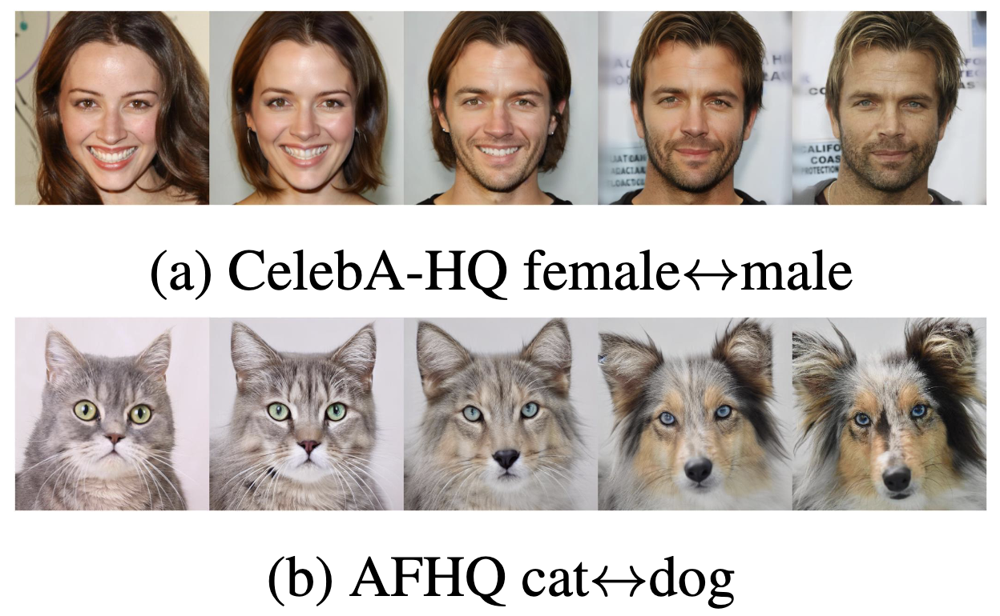
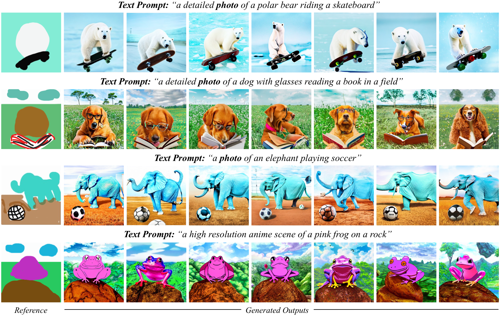
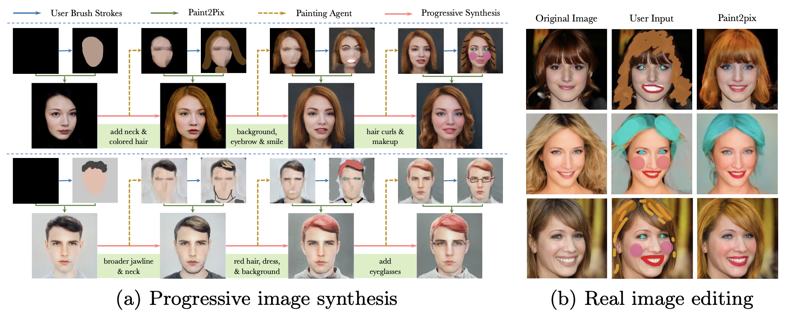
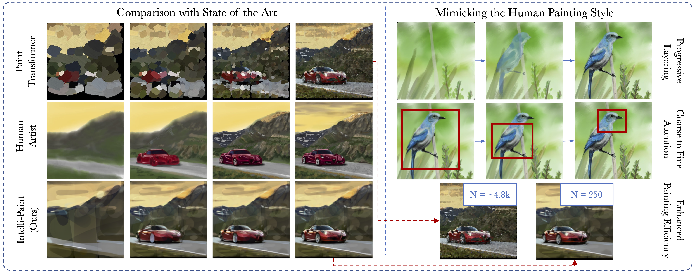
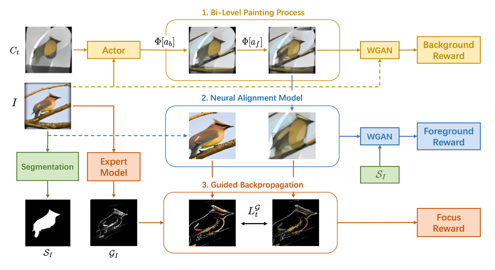
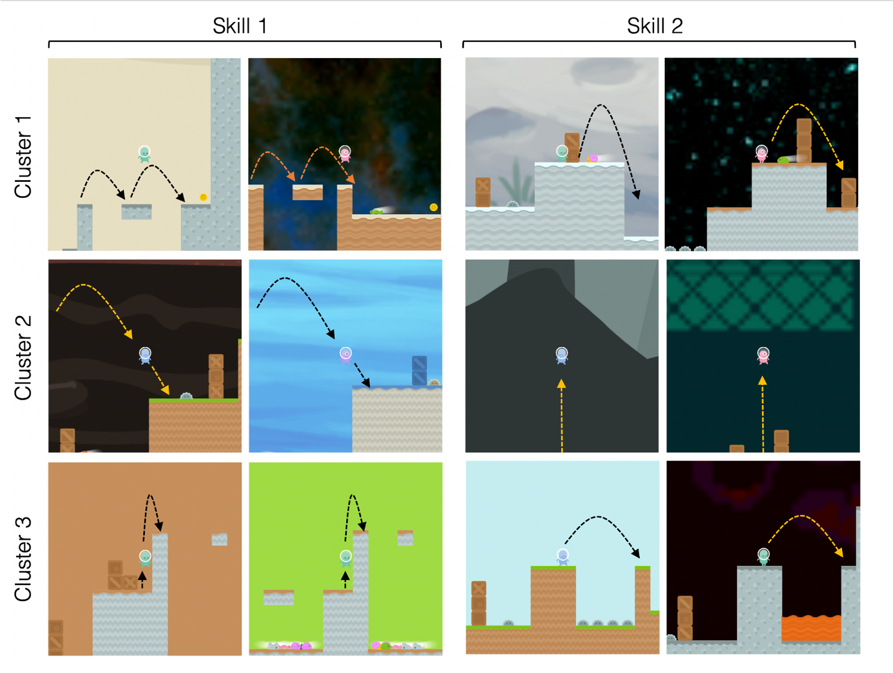
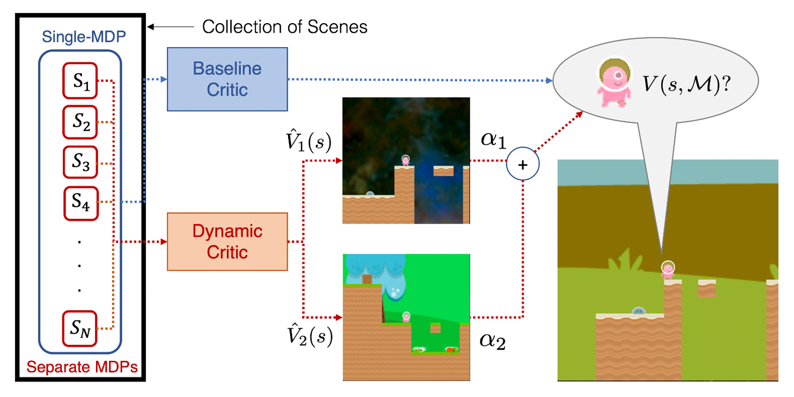

About Me
I am a third year Ph.D. student in the College of Engineering and Computer Science (CECS) at the Australian National University, where I am supervised by Prof. Liang Zheng and Prof. Stephen Gould. I am currently an intern in the Imagine-Core team at Meta GenAI under Prof. Michael Cohen, working on subject-consistent multiple-shot video generation.Ph.D. Research Interests: Controllable image synthesis and editing, Creative content generation, Subject-consistent visual storytelling, Long-form video generation.
Previously I was also a two-time intern at Adobe Research working under Dr. Zhe Lin and Dr. Jianming Zhang. Prior to that, I had graduated from Masters of Machine learning and Computer Vision with top-honours from Australian National University. Even earlier, I was worked as machine learning research engineer at Yahoo Japan. I received my Bachelors in Electrical Engineering with specialization in intelligent and cognitive systems from IIT Delhi.

News
- [24 Jan, 2025] Three papers (1 Oral and 2 Poster) accepted at ICLR 2025 🎉🎉🎉
- [28 May, 2024] Started Internship at Meta GenAI working on subject-consistent video generation 🤗
Selected Publications

|
Negative Token Merging: Image-based Adversarial Feature Guidance🏆 Image based classifier-free guidance [instead of text] to improve output diversity, quality, control in just few lines of code! [Paper] [Code] [Project Website] [Huggingface Demo 🤗] |

|
OpenDevin: An Open Platform for AI Software Developers as Generalist AgentsBest LLM Agent [🥇 SWE-Bench-Lite] [🥇 SWE-Bench-Verified]ICLR 2025: Oral [Paper] [Code] [Project Website] |
|
 |
Vec2Face: Scaling Face Dataset Generation with Loosely Constrained VectorsICLR 2025 [Paper] [Code] [Project Website] |

|
SmartMask: Context Aware High-Fidelity Mask Generation for Fine-grained Object Insertion and Layout ControlJaskirat Singh, Jianming Zhang, Qing Liu, Cameron Smith, Zhe Lin, Liang Zheng.CVPR 2024, US Patent [Paper] [Project Website] |
|
 |
Divide, Evaluate, and Refine: Evaluating and Improving Text-to-Image Alignment with Iterative VQA FeedbackJaskirat Singh and Liang Zheng.NeurIPS 2023 [Paper] [Code] [Project Website] |
|
 |
IMPUS: Image Morphing with Perceptually-Uniform Sampling Using Diffusion ModelsICLR 2024[Paper] [Code] |
|
 |
High-Fidelity Guided Image Synthesis with Latent Diffusion ModelsJaskirat Singh, Stephen Gould, and Liang Zheng.CVPR 2023 [Paper] [Code] [Project Website] |
|
 |
Paint2Pix: Interactive Painting based Progressive Image Synthesis
Jaskirat Singh, Liang Zheng, Cameron Smith, and Jose Echevarria. |
|
 |
Intelli-Paint: Towards Developing More Human-Intelligible Painting AgentsJaskirat Singh, Cameron Smith, Jose Echevarria, and Liang Zheng.ECCV 2022, US Patent [Paper] [Project Website] |
|
 |
Combining Semantic Guidance and Deep Reinforcement Learning for Generating Human Level PaintingsJaskirat Singh and Liang Zheng.CVPR 2021 [Paper] [Code] |
|
 |
Enhanced Scene Specificity with Sparse Dynamic Value EstimationJaskirat Singh and Liang ZhengarXiv [Paper] |
|
 |
Dynamic Value Estimation for Single-Task Multi-Scene Reinforcement LearningJaskirat Singh and Liang ZhengarXiv [Paper] |
Advisors
- Prof. Liang Zheng - Associate Professor 🏛️ Australian National University
- Prof. Stephen Gould - Senior Professor 🏛️ ANU, Amazon Research
- Prof. Marcus Hutter - Senior Research Scientist 🏛️ Google Deepmind
- Dr. Jianming Zhang - Principal Research Scientist 🏛️ Adobe Research
- Dr. Zhe Lin - Senior Principal Research Scientist 🏛️ Adobe Research
- Prof. Michael Cohen - Director of Computational Photography 🏛️ Meta GenAI